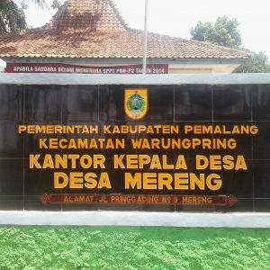

Sejarah Desa Mereng
Pengertian Desa sebagaimana diatur dalam Peraturan Pemerintah Nomor 72 Tahun 2005 tentang Desa adalah kesatuan masyarakat hukum yang memiliki batas-batas wilayah yang berwenang untuk mengatur dan mengurus kepentingan masyarakat setempat berdasarkan asal usul dan adat istiadat setempat yang diakui dan dihormati dalam sistem Pemerintahan Negara Kesatuan Republik Indonesia. Mencermati pengertian desa sebagaimana diatur dalam PP 72 Tahun 2005 tentang Desa dimaksud, maka secara yuridis Wilayah Mereng dapat disebut Desa dan secara administratif termasuk wilayah Kecamatan Warungpring Kabupaten Pemalang.
Penamaan/Nomenklatur Desa Mereng berdasarkan adat istiadat secara turun temurun sejak zaman kerajaan dan dari zaman penjajahan Belanda sampai sekarang nama Mereng tetap dilestarikan. Namun secara formal nama Mereng belum diketahui dibakukan dalam bentuk peraturan perundang-undangan misalnya peraturan daerah, walaupun demikian nama Desa Mereng telah diakui secara administratif sebagai salah satu nama desa dari 211 desa yang ada di Kabupaten Pemalang.
Pada tahun 1990-an terjadi longsor di Dusun Bengkeng yang merupakan perbatasan Kabupaten Pemalang dan Kabupaten Tegal mengakibatkan Jalan Raya putus dan tidak dapat dilewati sehingga jalan yang dulunya berbelok akhirnya diluruskan. Longsor kembali terjadi di wilayah Dusun Pagembrongan pada ± tahun 1992 mengakibatkan tanah pertanian lumpuh beberapa bulan sebelum ada rehabilitasi. Desa Mereng merupakan sentra pertanian tanaman Pete, Durian dan Nangka dan ketiganya merupakan produk unggulan Desa Mereng